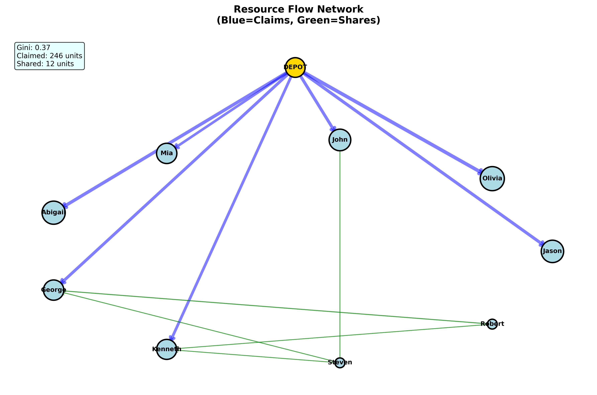
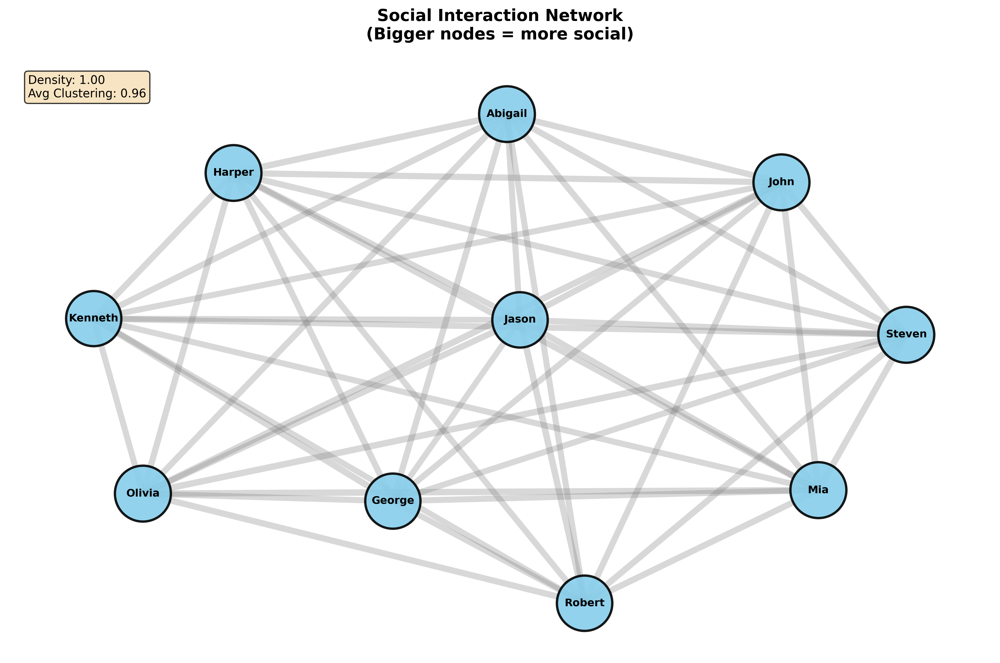

Heterogeneous MASTOC: Memory, Coordination, and Commons Governance in Multi-Agent Simulation
commons governance, simulation video, architecture
Thesis research project



Heterogeneous MASTOC studies how unequal agents share a commons under pressure, and how memory changes accountability, coordination, and recovery.
Abstract
This project models a shared pasture where herders, regulators, and a scout operate under different pressures. Some agents extract early, some monitor, and some try to stabilize the group through public signals. The core question is simple: can a commons remain fair and sustainable when agents remember past behavior instead of treating each round as socially blank?
Simulation
Add your looping simulation video here.
Architecture
Add your architecture diagram here.